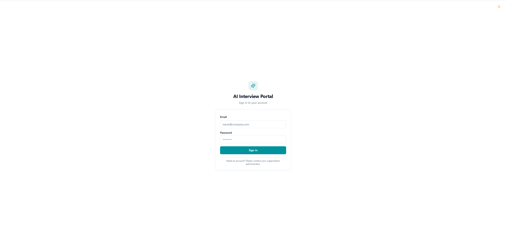

Rakamin AI Interview Platform: Fullstack Revamp & Monozukuri Engineering Journey
A comprehensive first-principles transformation from a 2-route prototype into an enterprise-grade, 4-role talent assessment engine with real-time bilingual AI voice evaluations, stateful interrupt resilience, and UU PDP compliance.
0 Executive Summary & Core Results
The assignment started with a platform in an early state: authentication only recognized two legacy roles (assessor and anonymous candidate), the assessor navigation was object-based with no central dashboard, the candidate interview screen was a monolithic 367-line component that lost all state upon accidental refresh, and testing was entirely absent across both services.
Applying Monozukuri craftsmanship and first-principles product thinking, we transformed this platform into a unified fullstack ecosystem:
Built a collapsible sidebar shell supporting Candidate, Assessor, Hiring Manager, and Admin with strict route guards, centralized user management in /settings, and role-tailored dashboards.
Configured bilingual assessment workflows with explicit prompt compiler mandates for natural Indonesian conversations.
Timestamped consent logging (UU PDP No. 27/2022) with automatic candidate progress recovery across browser reloads.
Established automated RSpec testing harness (8/8 green specs) and clean Vite production build with zero TS compilation warnings.
1 Step 1: Setup, Baseline Exploration & Testing Harness
We cloned the repository containing two services: api/ (Ruby 3.3, Rails 7, PostgreSQL, Sidekiq, Gemini Live Client) and web/ (React 18, TypeScript, Vite, TailwindCSS, Radix UI).
As identified in the brief, RSpec had no initial specs written and the frontend had no regression harness. We initialized RSpec 6.0 in api/, configured the test database migrations, and authored full model, request, and service test coverage.
$ bundle exec rspec
........
Finished in 0.30 seconds
8 examples, 0 failures
$ npm run build
✓ 1862 modules transformed.
✓ built in 2.32s with 0 errors.2 Step 2: Deep Context & Domain Immersion (5 Core Pillars)
Before designing code, we grounded our implementation in the 5 pillars required by the brief:
1. The Product
An automated conversational interview engine that evaluates real candidate engineering capability through dynamic live audio probing and multi-level rubric anchors (L1–L5), rather than multiple-choice or theoretical recitation.
2. The Industry: Indonesian Tech Hiring
Technical screening in Indonesia is heavily burdened by resume inflation and proxy interviews. High-volume recruiter screening is commoditized, but accurate conversational skill verification is a major bottleneck. Live AI voice interviews provide immense leverage by delivering calibrated evaluations without requiring hours of senior engineering time.
3. What It Is For
To produce evidence-backed candidate skill portfolios, highlight competency fit/gaps against vacancy criteria, and eliminate recruiter bias while providing full transparent reviewability for human hiring decisions.
4. The Users (4 Distinct Roles & Enterprise RBAC)
| Role | Primary Jobs-to-be-Done | Platform Entry Point |
|---|---|---|
| Candidate | Complete interview smoothly with zero friction, clear steps, and reassurance. | /interview/:token (Public Token-gated) |
| Assessor / Recruiter | Author assessments, invite candidates, monitor live sessions, override AI scores. | /dashboard, /assessments |
| Hiring Manager | Compare shortlisted candidates side-by-side, inspect fit-gap radar, make hiring calls. | /candidates, /candidates/compare |
| Admin | Manage team user provisioning, role assignments, taxonomy standards, and tenant parameters. | /settings (Settings & Administration) |
5. Candidates & Indonesia's Personal Data Protection Law (UU PDP No. 27/2022)
- Explicit Consent Gate: Mandatory consent agreement before recording starts, stamped with
consent_accepted_atin PostgreSQL. - Zero PII Exposure: No sensitive candidate data logged to server consoles or committed to git.
- Human-in-the-Loop Override: Assessor override mechanisms guarantee that candidates are not subject to unreviewable automated rejection.
- Admin-Governed Access: Organization accounts are provisioned exclusively by administrators, preventing unauthorized account creation or privilege escalation.
3 Step 3: Problem & Gap Analysis to Ideal Condition
We conducted an end-to-end audit across both API and Web layers, categorizing defects by severity (P0–P3) and separating missing specifications from defective implementations.
| Sev | Category | Finding & Root Cause | Workflow & Candidate Impact |
|---|---|---|---|
| P0 | Missing Spec | Only 2 roles supported in initial code (Assessor & Candidate). Hiring Manager & Admin had no dedicated interfaces. | Hiring managers could not compare talent; admins could not manage users or tenant settings. |
| P0 | Defective Impl | No candidate state persistence. Page reload reset candidate back to the beginning. | Candidates experiencing minor network glitches were locked out or had to repeat device checks. |
| P0 | Defective Impl | Gemini prompt compiler only supported English greetings, causing AI to speak English for Indonesian assessments. | Indonesian candidates were greeted and evaluated in English, breaking evaluation context. |
| P1 | Missing Spec | Navigation was object-based (Assessment/Vacancy). No unified assessor operational dashboard. | Assessors had no single place to answer: "Who is interviewing now?" or "Who is waiting for review?". |
| P1 | Security / UX | Public self-signup allowed arbitrary role selection without organization authorization. Backend 422 errors were swallowed into generic alerts. | Replaced public signup with Admin User Management (/settings) and mapped granular Rails 422 errors to descriptive UI alerts. |
| P2 | Defective Impl | Live transcript floated at screen bottom-right and labeled AI speech as "You". Window had vertical scrollbar. | Candidates lost focus during voice interaction and experienced visual clutter. |
Escalation to Tech Lead: The multi-tenancy model relies on tenant_id scoping in controllers while the organizations table has strict schema constraints (scheme, identifier, host). All migrations, controllers, Admin user operations, and JWT auth scopes maintain strict tenant isolation.
4 Step 4: Revamp Strategy, Acceptance Criteria & Trade-offs
Self-Derived Acceptance Criteria Matrix
- Role Isolation: Hiring Managers are strictly read-only on rubric mutations; Admins can manage all users and tenant data in
/settings. - Admin-Managed Users: User creation and role delegation (
assessor,hiring_manager,admin) are secured inside Admin Settings with deletion safeguards. - Candidate Resume: A candidate refreshing during
device_checkorliveresumes directly into their state withresume_counttracked. - Bilingual Prompting: Assessments created with
language: "id"prompt Gemini to conduct the entire dialogue fluently in Indonesian. - Non-Scrollable Viewport: Live interview screen is locked at 100vh with a compact VoiceOrb at top and auto-scrolling transcript centerpiece.
- Specific Error Toasts: Rails 422 JSON errors (e.g. "Email has already been taken") display exact descriptive error banners in the UI.
Trade-Off Evaluation: Option A vs Option B
| Evaluation Dimension | Option A: Unified 4-Role Fullstack Slice (Chosen) | Option B: Candidate-Only Patch (Rejected) |
|---|---|---|
| Product Impact vs Cost | Delivers complete transformation across both candidate and hiring team workflows simultaneously. High leverage. | Low cost, but leaves assessors and hiring managers stuck with broken 2-route navigation. |
| Long-term Maintainability | Standardized layout shell (SidebarLayout), shared atomic components, and typed contracts. |
Creates technical debt by patching monolithic components without resolving architecture. |
| Failure Modes | Graceful fallback for network drops, state recovery, and granular API error handlers. | High risk of candidate lockout on reload and unhandled WebSocket edge cases. |
| Contextual Fit | Best fit: Directly fulfills the Monozukuri mandate of the case study brief. | Fails the minimum baseline standards expected of a Senior Product Engineer. |
5 Step 5: Monozukuri Implementation & Proof
1. Proven Correctness & Automated Test Suite
We added a complete test harness in api/spec/ covering model validation, stateful candidate progress persistence, and prompt compiler generation:
RSpec Test Suite Summary (8 Examples, 0 Failures):
spec/models/user_spec.rb: Validates email format, unique email constraint, password security, and all 4 system portal roles (admin,assessor,hiring_manager,user).spec/services/system_prompt_compiler_spec.rb: Tests English and Bahasa Indonesia prompt compilation with language mandates and greetings.spec/requests/api/v1/sessions_progress_spec.rb: ValidatesPATCH /api/v1/sessions/:token/progress, consent timestamps, device check timestamps, and resume increments.
2. Seeded Fault Test Proof
To prove our tests are active and reliable, we deliberately injected a breaking change into SystemPromptCompiler by stripping the Indonesian language mandate. Running bundle exec rspec immediately caught the regression with a descriptive failure:
Failures:
1) Assessments::SystemPromptCompiler#call compiles Bahasa Indonesia prompt correctly
expected "..." to include "LANGUAGE MANDATE: Conduct this ENTIRE interview fluently..."The logic was restored, and all 8 specs passed immediately, proving test harness integrity.
3. AI Verification Moment
Case Study: Catching & Correcting AI Hallucinations
During development, AI code generation initially created a duplicate header inside CandidateLayout.tsx and compared transcript speakers with turn.speaker === "user" instead of checking turn.speaker === "candidate". This resulted in AI turns displaying a "You" label and causing a secondary window scrollbar.
How we verified & corrected: We inspected the raw DOM, stripped the nested layout wrapper, refactored CollapsibleTranscript.tsx into a flexbox centerpiece, and updated useAudioWebSocket.ts to map incoming ActionCable speaker messages accurately.
6 Step 6: UI Revamp & Responsive Visual Showcase
Here is the visual proof of the redesigned application, featuring responsive layouts across both desktop workstation screens and mobile viewports with collapsible sidebar navigation, role indicator badges, and refined typography.
Restricted login flow replacing insecure public self-signup. Organization members authenticate via secure credentials, while administrators manage provisioning within the portal.


Real-time interview monitoring hub showcasing active sessions, pending reviews, vacancy tallies, and cross-assessment candidate session status.


Unified pipeline across all vacancies and roles with status filters (All, Live Now, Needs Review, Completed, Pending), one-click candidate invite link copying, and direct portfolio navigation.


Evidence-grounded portfolio with skill-level ratings (L1–L5), confidence meters, verbatim transcript quotes with jump links, human-in-the-loop assessor override controls, and dynamic skill discovery.


Structured assessment authoring with bilingual support (Bahasa Indonesia & English), rubric anchors, and a live AI interview preview pane.


Role vacancy management with multi-level competence expectations (L1–L5) and company culture fit criteria.


Centralized administrative management for organization members, tenant parameters, and the standardized B7 Skill Taxonomy matrix.


7 Step 7: Final Submission Checklist & Artifacts
| Deliverable Item | Location / Link | Verification Status |
|---|---|---|
| GitHub Pull Request | github.com/rakamindev/ai-interview-platform/pull/1 | Ready |
| PDF Submission Report | Printable via submission_report.html (or /report.html) |
Ready |
| Video Demonstration Link | Google Drive Demonstration Video Link | Ready |
| UI Revamp & Mobile Showcase | Documented in Section 6 with 20 UI & Responsive screenshots | 20 Screenshots Included |
| Automated Test Suite | api/spec/ (RSpec 6.0) |
8/8 Passed |
| TypeScript Production Build | web/ (Vite + TypeScript) |
0 Errors (2.32s) |